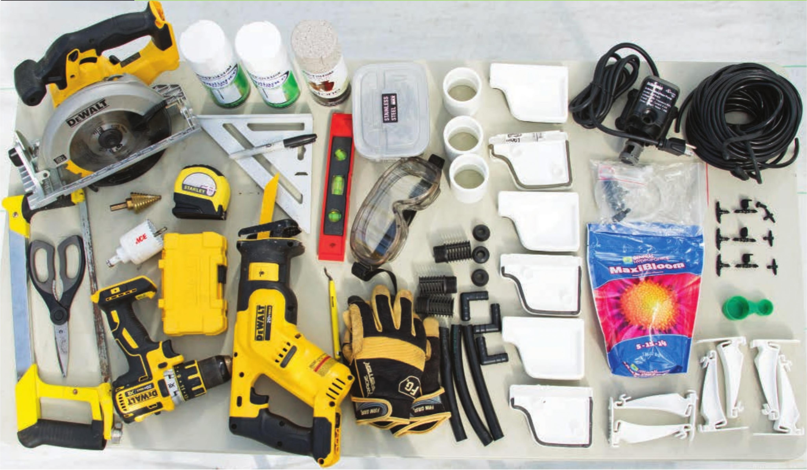

TOOLS Sawhorses with damps Tape measure Permanent marker Circular saw Drill 2" hole saw drill bit (shown at right) Step drill bit with Vs" increments from V4 " to 1 %" V4" drill bit Level Rafter square Hacksaw Heavy-duty scissors Deburring tool Reciprocating saw Irrigation line hole punch Safety Equipment Work gloves Eye protection HYDROPONIC GROWING SYSTEMS 121
